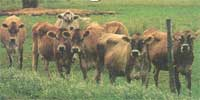

JOHN REIS/PHOTOLINK
Hygromas are false bursa, fluid-filled sacs that appear over bony prominences after severe trauma, but if this trauma is repeated time and time again, the bruise cannot be resorbed because the surrounding tissue is so damaged. Consequently, fluid accumulates in a well delineated sac.